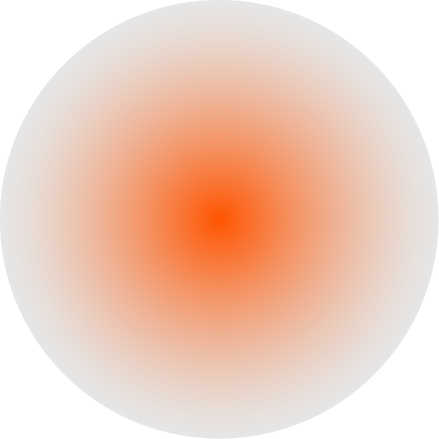

01 - COSMETICS- {Beauty Mark}Point ; A Euphemism for A Type of Dark Facial Mark
01 - COSMETICS- {Beauty Mark}Point ; A Euphemism for A Type of Dark Facial Mark
01 - COSMETICS- {Beauty Mark}Point ; A Euphemism for A Type of Dark Facial Mark
{눈물}점

눈 밑에 있는 점
점의 일종으로 눈가, 정확히는 눈 밑에 있는 점을 뜻하는 일본어 泣きぼくろ의 한국어 직역이다. 원래 {눈물}점이라는 단어는 눈꺼풀에 있는 {눈물}길의 입구가 되는 부분을 지칭하는 의학용어다.
점의 일종으로 눈가, 정확히는 눈 밑에 있는 점을 뜻하는 일본어 泣きぼくろ의 한국어 직역이다. 원래 {눈물}점이라는 단어는 눈꺼풀에 있는 {눈물}길의 입구가 되는 부분을 지칭하는 의학용어다.

1. { }점이 있으면 감성이 풍부해서 { }이 많다는 속설이 유명하다.
2. { }점을 흉점이라 해서 빼는 사람들도 많았지만, 요즘은 { }점을 일부러 그리는 경우도 많다.
3. 이유없이 { }이 자주 난다면 { }점이 막혔을 가능성이 있다.
4.{ }점이 있으면 배우자나 자식 문제로 { }을 많이 흘리게 된다는 관상학적 이야기가 매우 흔하다.
5. 인공적으로 { }점을 그리는 것은 16세기 프랑스에서도 유행했었다.
6. 나이가 들며 감성적으로 변해 { }이 나는 게 아니라 { }흘림증의 증상일 수 있다.